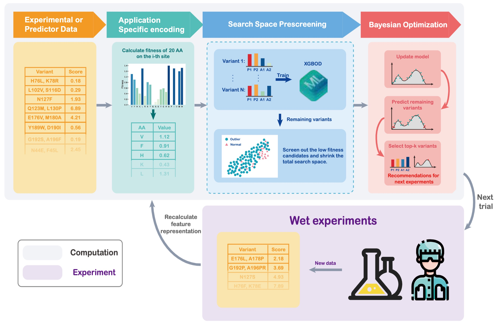

The goal of this direction is to transform the experimental design by replacing trial-and-error with few-shot minimal data adaptive optimization with approaches like Bayesian optimization (BO), active learning, and reinforcement learning to efficient exploration of complex and high-dimensional experimental spaces. In our research, we build our models with uncertainty-aware algorithm, outlier managements, low-dimensional representations, and domain-specific priors to ensure practical performance in noisy and constrained real-world chemistry experimental settings. By forming feedback loops, we hope to help the experimentalists to provide a general tool to acheive closed-loop discovery in chemistry, biology, and materials science.
- ODBO (Outlier-detected Bayesian Optimization): a ML protein directed evolution protocol that integrates low-dimensional and function-value-based protein encoding, search space prescreening with BO & outlier detection surrogate modeling to efficiently navigate noisy large sequence spaces and recommend high-fitness variants with minimal experimental cost.
Problem-driven Fine-tuning and Benchmark Constructions for Scientific LLM Agent
- The impact of large language models on scientific discovery: a preliminary study using GPT-4 : Benchmark LLM4Sci performance in various tasks.
Scientific Multi-agent System
Our scientific multi-agent system research aims to blend AI reasoning, simulation, and automation layers so that different agents specialize in planning experiments, coordinating complex workflows, and validating results across the physical sciences. These projects emphasize modular "agents" that exchange intermediate results, re-plan when simulations fail, and incorporate human-domain expertise only when necessary. Representative efforts include: